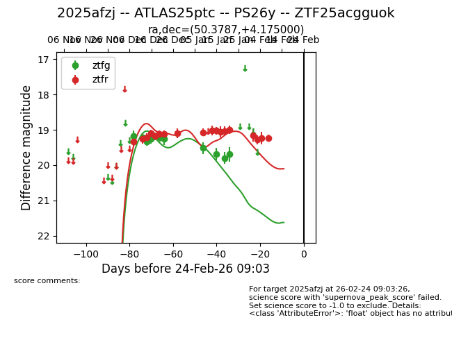
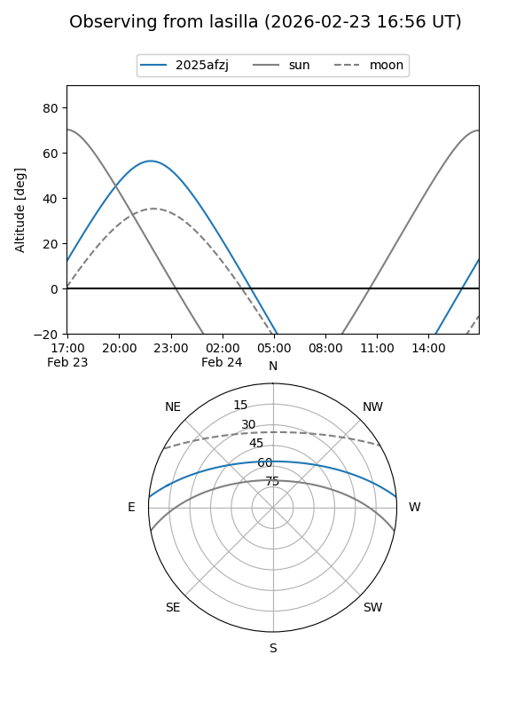
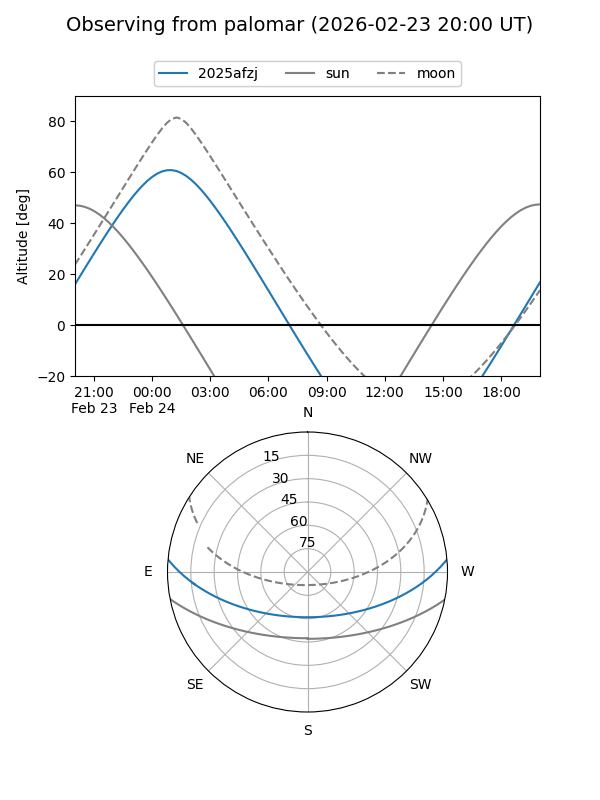
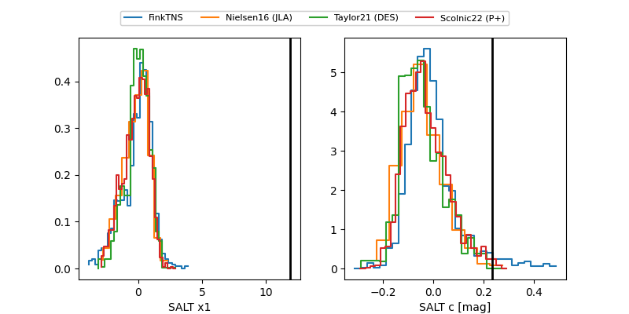

2025afzj
Target 2025afzj at 2026-01-21 04:25
Aliases and brokers:
FINK: link
Lasair: link
ALeRCE: link
TNS: link
YSE: link
alt names
ZTF25acgguok (ztf,fink_ztf)
2025afzj (tns,yse)
ATLAS25ptc (atlas)
PS26y (panstarrs)
Coordinates:
equatorial (ra, dec) = 50.3787,+4.17500
equatorial (HMS+DMS) = 03:21:30.89,+04:10:30.00
galactic (l, b) = (177.9203,-42.13060)
Flags:
Photometry:
last ztfg=19.80, ztfr=19.00
10 ztfg, 14 ztfr detections
Lightcurve

Visibility


Additional plots
